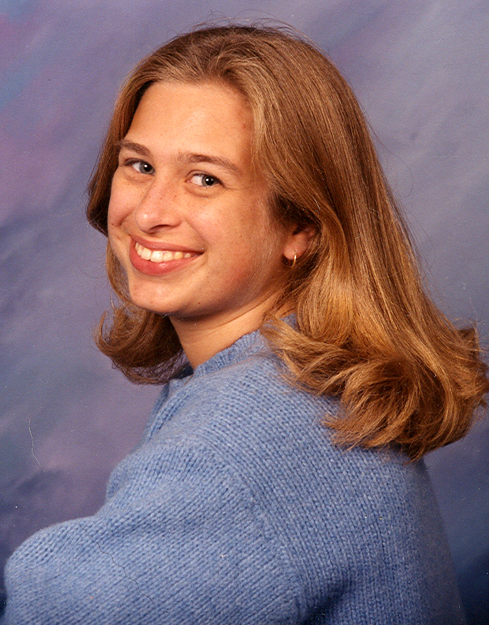
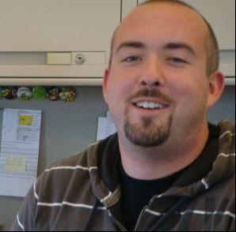
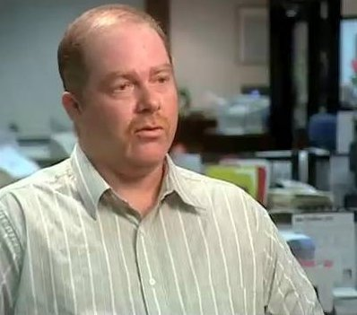
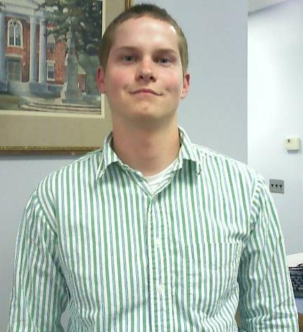
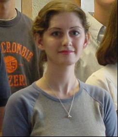
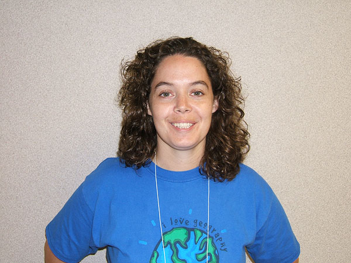
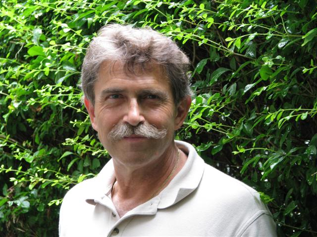

|

|
Kristen
Cole Geographic Analyst NAVTEQ Albany, NY Graduated from CCC in 2002 and transferred to SUNY ESF where she completed
her B.S. in 2004. |
|

|
Sid
Cuff GIS Analyst Institute for the Application of Geospatial Technology (IAGT) Auburn, NY 2002 Graduate of Cayuga's GIS program. Started his career at IAGT soon
after graduation. |
| Michael
Holmes Software Engineer Immediate Mailing Services Inc. Liverpool, NY Graduated from CCC in 2003. Worked as a GIS Intern, Technician, and Programmer Analyst at IAGT before taking the current position. In his own words:I have seen GIS technology become more and more integrated in everyday applications. Currently I'm employed as a Software Engineer in the mail services industry. My responsibilities are focused on developing an automated file tracking system utilizing Microsoft's .NET Platform. I believe my education and experiences in the GIS field is what has allowed me to get where I am today. |
|
| Bill
Schultz Database Administrator Home Properties, Rochester, NY 2003 Graduate of Cayuga's GIS program. Transferred to SUNY ESF and completed
B.S. in Environmental Studies (GIT option) in 2005. Recipient of CCC's
Ralf Standbrook scholarship for an outstanding GIS student |
|
|

|
Greg
Sears Distribution Manager, The Citizen Auburn, NY Graduated in 2004 and created his own job in "The Citizen"
while finishing his final GIS project at CCC titled "Market Penetration".
In his GIS project, Greg studied the distribution of the Citizen (newspaper)
subscriber and created a map showing the potential areas for targeted
marketing to expand the subscriber base in the city of Auburn. |
|

|
Steve Smith 2004 Graduate of Cayuga's GIS program. Spend a year at the University
of Hawai and then completed his BS in geology from SUNY Oswego. |
|

|
Michelle
Bunny GIS Specialist, Department of Planning Jefferson County, Watertown, NY 2004 Graduate of Cayuga's GIS program. Recipient of CCC's Ralf Standbrook
scholarship for an outstanding GIS student |
|

|
Jean
Miller GIS Technician Cayuga County Office of Real Property Services Auburn, NY Graduated from CCC in 2006 and started her career as a GIS technician with IAGT. Moved to her current position in 2008 In her own words:GIS was a fresh start for me after working in the retail industry for several years. Attending CCC was a great experience. The applications I learned, not only for GIS, have helped me gain a lot of real world experience at IAGT. |
|

|
Mike
Hoyt GIS Technician City of Watertown, NY Unlike many others, Mike came to CCC with a 4 year degree and graduated
in 2007 with an AS degree in GIS. He started a new career as a GIS technician
soon after graduation |
Please EMAIL me any updates/changes related to your job